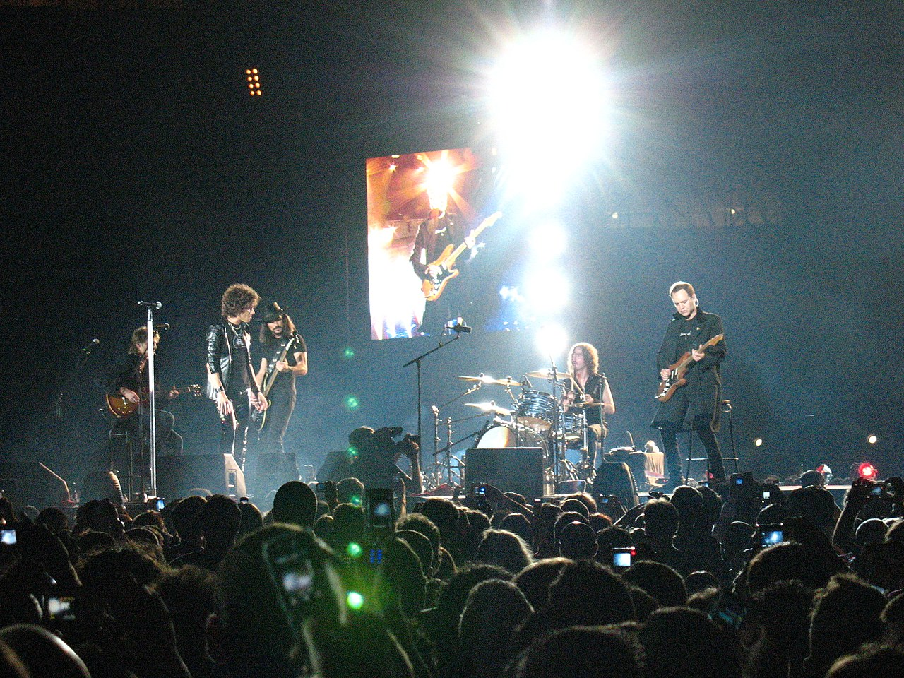
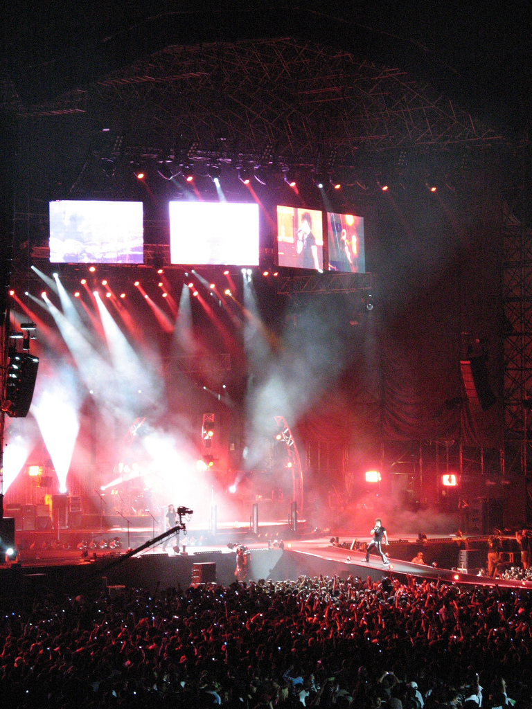
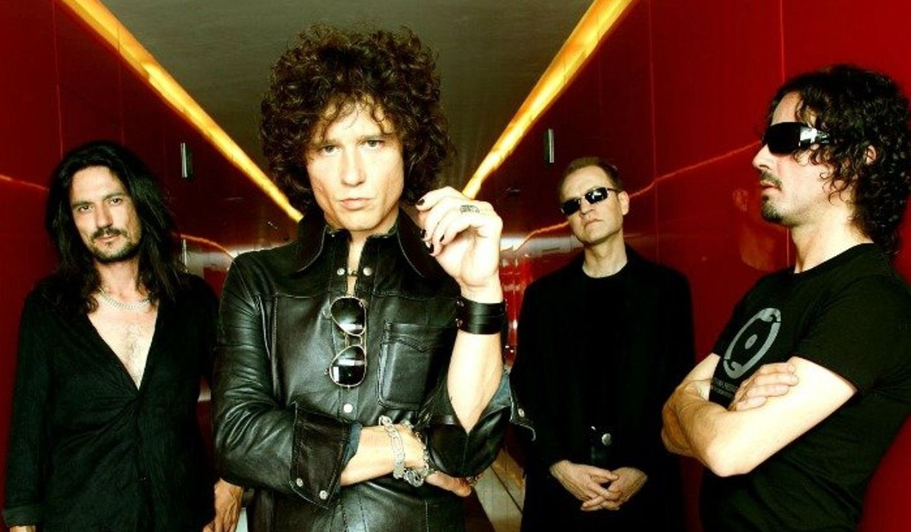
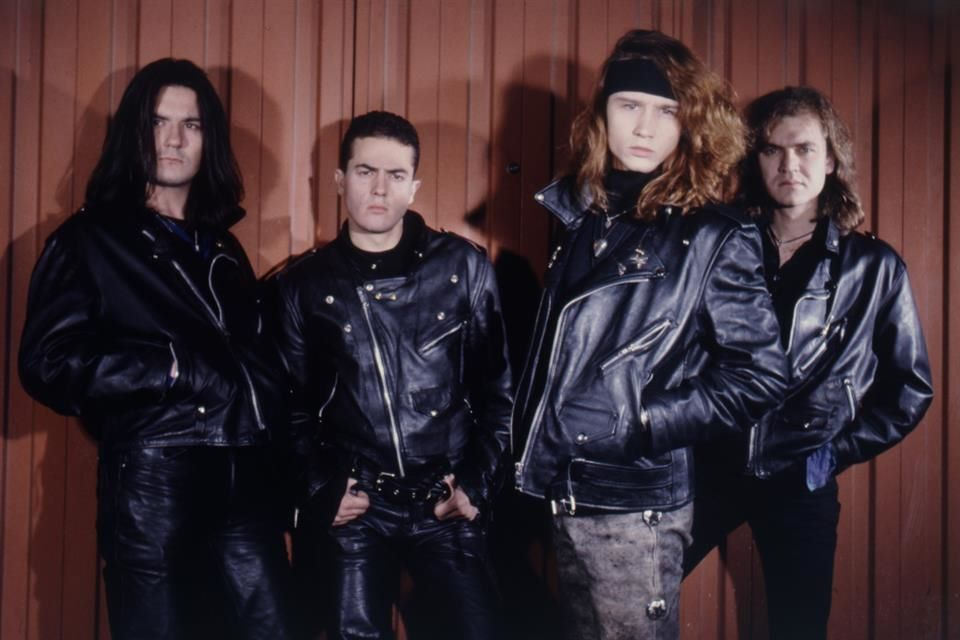

Heroes del silencio
Héroes del Silencio (a veces abreviado Héroes o por sus iniciales HDS) fue un grupo español de rock radicado en Zaragoza, formado inicialmente por Juan Valdivia (guitarra solista) y Enrique Bunbury (voz y guitarra rítmica), y completado con Joaquín Cardiel (bajo) y Pedro Andreu (batería), a mediados de los años 80. Experimentaron un gran éxito en España e Hispanoamérica, así como en varios países europeos, incluyendo Alemania, Bélgica, Suiza, Francia e Italia, convirtiéndose en uno de los grupos más exitosos de la historia del rock en español.Después de doce años en los que vendieron más de seis millones de discos en más de treinta y siete países, y en los que ofrecieron más de mil conciertos, la banda se separó en 1996.
Sus señas de identidad fueron una imagen muy característica, con una iconografía y simbología muy particulares, y una música caracterizada por unas letras ambiguas y trascendentales, arpegios complicados y una sólida base rítmica. Entre sus influencias literarias se han citado escritores como William Blake y Charles Baudelaire, y entre las musicales a grupos como Led Zeppelin y The Cult.
En 2007, conmemorando el vigésimo aniversario de sus primeras grabaciones y once años después de su ruptura, anunciaron su regreso con una gira de diez conciertos en España y América, titulada genéricamente Héroes del Silencio Tour 2007. Después de la gira se separaron definitivamente.
Sus cuatro álbumes de estudio han sido incluidos por la revista musical Al Borde en la lista de los 250 mejores de todos los tiempos del rock iberoamericano: Senderos de traición (n.º 5), Avalancha (n.º 35), El espíritu del vino (n.º 117) y El mar no cesa (n.º 119). Su canción «Entre dos tierras» ha sido considerada por la revista digital Satélite Musical como la decimonovena mejor de todos los tiempos del rock hispano en general. La revista Rolling Stone los calificó en 2012 como el segundo mejor grupo de rock español de la historia.
En 2007 fueron homenajeados por la discográfica EMI en reconocimiento a sus más de seis millones de discos vendidos, además de recibir el Premio Ondas Especial del Jurado.
Comienzos (1984-1990)
Los orígenes de Héroes del Silencio se sitúan en la ciudad de Zaragoza, a principios de los años 1980. Allí, los hermanos Pedro (batería) y Juan Valdivia (guitarra) comenzaron a dar sus primeros pasos en el mundo de la música, junto con un primo de ambos, Javier Guajardo Valdivia -que era el cantante- formando el conjunto Zumo de Vidrio. El contexto musical de aquel momento en España estaba dominado por grupos generados en la "movida madrileña" como Alaska y Dinarama, Radio Futura, Nacha Pop, Gabinete Caligari y Los Secretos, además de los barceloneses El Último de la Fila. Los artistas extranjeros más influyentes pertenecían a estilos más diversos: Michael Jackson, The Police y Dire Straits.
Durante esa época, conocieron a Enrique Ortiz de Landázuri (después Enrique Bunbury), que tocaba el bajo y cantaba en Proceso Entrópico, banda con la que compartieron algunos escenarios, y a quien en 1984 invitaron a sumarse al grupo. Bunbury aceptó y comenzaron (como trío, tras abandonar el primo de los Valdivia la formación) sus primeras actuaciones (la primera, el 16 de diciembre de 1984), además de grabar su primera maqueta con los temas "Olvidado", "Sindicato del riesgo", "Héroe del silencio" (después llamada "Héroe de leyenda") y "Hologramas". Como el estilo oscuro y simbólico, con claras influencias post punk, de las nuevas composiciones tenía muy poco que ver con el pop de Zumo de Vidrio, decidieron cerrar su etapa y refundar el grupo. En 1985, se incorporó al mismo un nuevo bajista, Joaquín Cardiel, para descargar de trabajo a Enrique, que cantaba y componía las letras. Ese mismo año Pedro Valdivia dejó la formación para centrarse en sus estudios, y fue sustituido por el batería zaragozano Pedro Andreu.
El nombre surgió por casualidad, cuando se dirigían con su primera maqueta a las instalaciones de Radio Zaragoza para promocionarla, y aún no habían decidido cómo iban a llamarse. Entonces, uno de ellos sugirió "Héroes del Silencio" ("Héroe del silencio" era el título de una de sus canciones, que luego cambiaron por "Héroe de leyenda"), y al resto les gustó la idea, quedando como nombre definitivo de la formación. Ya como Héroes del Silencio afrontaron sus primeros retos: en 1986 consiguieron ganar la fase regional del Festival de Benidorm, y quedaron finalistas del concurso "Nuevo Pop Español" de Radiocadena Española, en cuya final, celebrada en Salamanca, comenzaron a ser seguidos por ejecutivos discográficos, además de despuntar ese año en las Fiestas del Pilar. Tras telonear a grupos como Alphaville, La Unión y El Último de la Fila, Gustavo Montesano (productor y guitarrista de Olé Olé) acudió a Zaragoza para verlos en directo en enero de 1987. El grupo causó una gran impresión a Montesano, que inmediatamente se lo recomendó a la multinacional EMI.
El recelo de la discográfica con el nuevo grupo le llevó a ofrecerles comenzar con un EP de cuatro temas, y grabaron, a finales de 1987 Héroes del Silencio. El disco alcanzó las 30.000 copias vendidas, lo que supuso un récord de ventas para un maxi de debut en España. Tras este éxito, EMI decidió lanzar el primer LP de Héroes del Silencio, compuesto por sus integrantes durante el resto de ese año y publicado en octubre de 1988. El mar no cesa vendió 150.000 copias, alcanzando el Disco de platino. Después, la banda comenzó la Gira El mar no cesa, bien promocionada por la discográfica, y en la que confirmó su potente directo.
Consagración (1993-1996)
En un concierto de la gira, en Calatayud, los vio actuar el productor Phil Manzanera, exmiembro de Roxy Music, a quien le causaron muy buena impresión. Manzanera, convencido de su potencial, se ofreció para producirles un nuevo álbum, y en septiembre de 1990 volvieron al estudio para grabar su segundo disco: Senderos de traición.
La grabación se llevó a cabo entre Madrid y Londres; algunos temas ya habían sido presentados durante la Gira El mar no cesa, y otros como "Decadencia" y "El cuadro II", que ya hacía tiempo que habían sido compuestos, fueron mejorados para su inclusión en el disco. Este resultó ser un conjunto de canciones potentes y emocionales que mostraron el progreso experimentado por el grupo, con temas como "Entre dos tierras" y "Maldito duende".
La crítica los comparó en esa época con The Mission, al tener puntos en común con los británicos como el tipo de arpegios, las letras crípticas, la sonoridad en general, la estética y la simbología. Años después, Bunbury consideró esta etapa la cumbre de Héroes, su momento de oro. Llegaron a decir que "el primer disco no reflejaba exactamente lo que era el grupo, reflejaba una parcela concreta (...) Hemos buscado un sonido más directo, una mayor energía, grabando con sonido ambiental y el bajo y la batería al mismo tiempo, porque así se consigue el feeling."
Durante la realización del álbum, grabaron también la versión en inglés de los temas "Entre dos tierras" y "Maldito duende", pero al final decidieron no publicarlas y quedarse con las grabaciones.
En dos semanas, el álbum se colocó en el número uno de ventas en España con unas 400.000 copias vendidas. En 1991 pusieron en marcha la gira Tour Senda, que incluyó 140 conciertos por todo el país y culminó con una minigira por Alemania, Suiza, Bélgica y Francia. El año 1992 lo dedicaron a la toma de contacto con el público europeo, actuando en 54 conciertos por varios países del continente, en una gira sufragada con las ganancias de los conciertos en España. Ese mismo año dieron sus primeros conciertos en México, el año de las celebraciones del V Centenario, lo que provocó según Bunbury un ambiente hostil que convirtió los conciertos en mera anécdota. Durante esa gira, que duró dos semanas, conocieron al guitarrista Alan Boguslavsky, que más tarde se convirtió en miembro del grupo.
Consagración (1993-1996)
A principios de 1993, volvieron al estudio de grabación para registrar lo que sería su tercer álbum de estudio, El espíritu del vino, que contó también con la producción de Phil Manzanera. La grabación se llevó a cabo en los estudios Metrópolis de Londres y concluyó en marzo. Fue el álbum más complejo y extenso de la banda y en el que las letras de Enrique se volvieron más enigmáticas. Formaron parte del álbum canciones que pasarían a formar parte de su repertorio más conocido, como "Nuestros nombres" o "La sirena varada", y fue publicado en junio de forma simultánea para toda Europa.
Nada más publicarse el disco, se embarcaron en la gira El Camino del Exceso, que les llevaría por Europa y América con un total de 134 conciertos, e incorporó al guitarrista mexicano Alan Boguslavsky como segunda guitarra. Es de reseñar que el 20 de julio la banda fue recibida en audiencia por el Príncipe Felipe, que se había declarado seguidor del grupo, como reconocimiento a su difusión del idioma castellano por el mundo. El encuentro tuvo su punto de polémica cuando Enrique, a la salida de la recepción, se declaró ante la prensa antimonárquico.
1993 fue también el año de su eclosión internacional. Este hecho comenzó con su intervención en un festival en Berlín contra el racismo que ratificó su éxito en Alemania, donde el álbum vendió 250.000 copias y fue n.º 1 de ventas, al igual que en España, México y Suiza. A su difusión contribuyó la emisión de sus vídeos musicales para todo el continente a través de la cadena musical MTV.
El tour incluyó también una gira de dos meses en Iberoamérica, con 26 conciertos en México, Chile y Argentina. Tras la prolongada gira, que culminó con cinco festivales en Alemania y Finlandia en julio de 1994, el grupo se tomó vacaciones. Como posteriormente reconocieron, los excesos y lo prolongado de la gira habían dañado seriamente la cohesión de la banda y habían provocado una profunda crisis interna.
Como forma de superar la crisis, los cuatro músicos buscaron la espiritualidad y la relajación y se concentraron durante dos meses del otoño de 1994 en un enclave aislado del Pirineo aragonés, cerca de Benasque. Allí discutieron su futuro, buscaron soluciones y planificaron su próximo disco, previsto para 1995. Una de las decisiones tomadas fue el cambio de productor, con el fin de dar un giro a su proyecto, que también incluyó los cambios de mánager y diseñador gráfico. Se pusieron en manos del prestigioso Bob Ezrin, productor de grandes álbumes de Pink Floyd, Alice Cooper, Lou Reed y Kiss, entre otros.
Tras tres meses de grabación en Londres y Los Ángeles, el 18 de septiembre de 1995 salió a la venta simultáneamente en 26 países el cuarto álbum de estudio de la banda: Avalancha, considerado su álbum más roquero, con guitarras poderosas y una gran producción. El disco fue un rotundo éxito de ventas, alcanzando las 200.000 copias vendidas.
A la publicación de Avalancha le siguieron la habitual promoción del disco y una gira de grandes proporciones que acabó provocando el definitivo alejamiento entre los miembros del grupo.
Separación (1996)
El Tour Avalancha fue una macrogira que, desde julio de 1995 hasta octubre de 1996, les llevó a dar 152 conciertos entre Europa y América. La convivencia durante la misma tuvo momentos difíciles, y el cansancio acabó acrecentando los conflictos internos en la formación. Durante su desarrollo, Bunbury comenzó por su cuenta la composición y grabación de nuevos temas, dejando entrever que su futuro estaba ya lejos de Héroes. Su último concierto, celebrado en la ciudad de Los Ángeles el 6 de octubre de 1996, resultó muy accidentado, y se vieron obligados a suspenderlo al poco de su inicio, al comenzar el público a lanzar objetos a los músicos, en respuesta a unas presuntas declaraciones de Enrique, que no dejaban muy bien paradas a las mujeres mexicanas.
Antes de concluir la gira, y en una rueda de prensa celebrada en Lima, Héroes del Silencio comunicaron su separación temporal. Fuera de su entorno, la noticia resultó sorprendente, pero con el tiempo llegaron a trascender algunos de los motivos que llevaron a tal situación. Las discrepancias musicales, sobre todo entre Juan y Enrique, les llevaron a un distanciamiento, y éstas se convirtieron en diferencias personales. También influyó en su estado de ánimo la muerte de dos personas muy cercanas al grupo: su road manager Martín Druille, en 1993, y el hermano de Enrique, Rafael, en 1994. Según comentó después Bunbury, los últimos meses de la gira fueron para él un calvario.
"Me doy cuenta de que cada vez me aíslo más en el autobús, en las decisiones que tomo junto a Tomás, Claire, los abogados, Rafael Gil, Ochaíta... en los camerinos, en las pruebas de sonido (...) La verdad es que no me veo formando una banda tipo los Rolling Stones, que dure una eternidad, soy un culo inquieto, necesito movimiento." Diario de Enrique Bunbury, 8 de noviembre de 1995.
Reunion (2007)
Fue en el lejano año 2007 cuando Héroes del Silencio dio su último concierto en lo que fue su gira de reencuentro. Una serie de conciertos en donde interpretaron todos sus éxitos y donde les regalaron a sus fans el sueño de verlos nuevamente juntos sobre un escenario.
Más de una década después, la banda sorprendió a todos al lanzar un documental en Netflix llamado 'Héroes: Silencio y Rock and roll' en donde dejaron ver sus secretos más íntimos y en donde se despejaron muchas dudas que giraban alrededor de la separación de la banda.